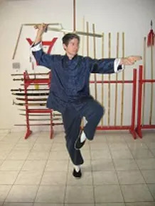

Tai Chi Clássico
Por Yang Cheng Fu
Uma vez em movimento, o corpo inteiro deveria estar claro e ágil, e até mesmo mais significativo, deve ser totalmente alinhado. Os chi deveriam ser despertados e deveriam ser feitos vibrantes. O espírito deveria ser colecionado dentro.
Não permita haver qualquer protuberância ou buracos. Não permita haver qualquer interrupção. Está arraigado nos pés, emite pelas pernas, governadas pela cintura, e expressa nos dedos. Então para a cintura, dos pés, para pernas, deve haver sempre integração completa em um chi. Avançando adiante e se retirando atrás, você poderá então agarrar a oportunidade e a vantagem estratégica.
Em um caso de não ganhar a oportunidade e vantagem estratégica, seu corpo estará divido e será confundido. A falha neste caso deve ser buscada certamente na cintura e pernas. Isto é assim se para cima ou abaixo, adiante ou para trás, esquerda ou direita. Estes casos são todos de intenção de mente e não se referem ao externo. Quando houver para cima, então está abaixo. Quando houver dianteiro, então há para trás.
Quando houver esquerda, então há direita. Se a intenção for ir para cima, então dirija a intenção de mente descendente, da mesma maneira que, se a pessoa for erguer um objeto, de então aplica além a isto a força de empurrão descendente. Assim, sua raiz será cortada, e se desmoronará depressa e decisivamente.
Cada ponto tem seu ponto real e irreal. O corpo inteiro ataca simultaneamente junta através de junta. Não permita a interrupção mais leve. O que é Boxe Longo (chang quan)? Seu está como o rio longo, ou um grande oceano, fluindo suavemente e constantemente. Encostar (peng), Trazendo para baixo (lu), Grudado (ji), Empurre (an), Puxe Abaixo (cai), Rasgue (lie), Golpe de Cotovelo (zhou), golpe de Ombro (kao): estes são os “Oito Trigramas” (ba gua). Avançar, se retirar, olhar para esquerda, olhar para direita, equilíbrio central: estas são cinco fases (wu shing).
Peng, Lu, Ji, e An, consecutivamente são: Qian, Kun, Kan e Li, ou as quatro direções cardeais. Cai, Lie, Zhou, e Kao, então, é Sun, Zhen, Dui, e Ken, ou as quatro direções de canto. Avançar, Se Retirar, Olhar para a esquerda, Olhar para a direita, e Equilíbrio Central, adequadamente, é Metal, Madeira, Água, Fogo, e Terra. Utilizando juntos, estes compreendem as treze posturas. Em Aparar para Fora (peng), Movimentar Colado em Rotação para Atrás (lu), Pressionar (ji), e Empurrar (an), você deve ter consciência deles.